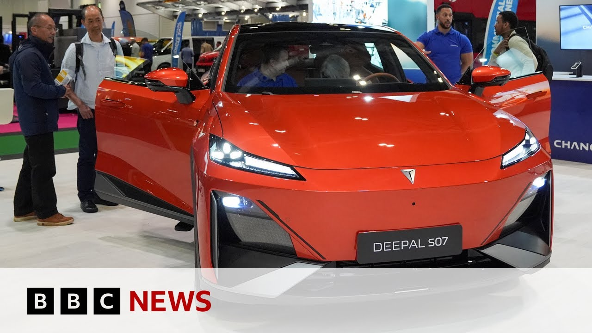

【2024年英国电动汽车销量占比达20% | BBC新闻】
Summary: The UK is phasing out petrol and diesel cars, with electric and hybrid models dominating new releases, yet they only accounted for 20% of sales last year, falling short of the 28% target due to cost and range concerns despite industry investment.
摘要： 英国正逐步淘汰汽油和柴油车，电动和混合动力车型主导了新车型发布，但由于成本和续航问题，去年仅占销量的20%，未达到28%的目标，尽管行业已大力投资。

⏱️ Estimated Reading Time: 6 min
There are 5 years to go until the government will begin to phase out the sale of new petrol and diesel cars in the UK.
距离英国政府开始逐步淘汰新汽油和柴油车的销售还有5年时间。
The car industry is adapting and the majority of new models being put onto the market now have either fully electric or hybrid engines.
汽车行业正在适应，现在市场上推出的大多数新车型都采用纯电动或混合动力发动机。
But last year they made up just 20% of all car sales.
但去年它们仅占全部汽车销量的20%。
Our climate editor Justin Rolot has been investigating why.
我们的气候编辑Justin Rolot一直在调查原因。
Just look at the scale of this.
看看这规模。
Car companies have brought dozens of cars and there are miles of track here at Milbrook Proving Ground to put them through their paces at the 2025 SMMT event here.
汽车公司带来了数十辆汽车，米尔布鲁克试验场这里有数英里的跑道，在2025年SMMT活动上对它们进行测试。
But something's missing, isn't it?
但少了点什么，不是吗？
Have a listen.
听一听。
No roaring engines.
没有轰鸣的引擎声。
Every wannabe Clarkson in British journalism is almost certainly here.
英国新闻界每个想成为Clarkson的人几乎肯定都在这里。
But here's an interesting fact.
但这里有一个有趣的事实。
The car industry has brought 154 models to this show.
汽车行业为这次展览带来了154款车型。
103 of them are either fully electric or hybrid.
其中103款是纯电动或混合动力车。
So what's that?
那是什么比例？
Two out of every three.
每三辆中有两辆。
It is a measure of just how invested the industry is in the electric future.
这衡量了行业对电动未来的投入程度。
Mike Halls is the head of the UK's Society of Motor Industry Manufacturers and Traders.
Mike Halls是英国汽车制造商和贸易商协会的负责人。
You look at the investment the industry has made over the last 10 years.
看看行业过去10年的投资。
It has all been in electrification.
全部投入了电动化。
They're trying not to develop petrol and diesel because they see those coming to a natural end.
他们不再开发汽油和柴油车，因为他们认为这些将自然终结。
So the market, the industry is moving towards zero emission vehicles.
因此，市场和行业正在向零排放车辆迈进。
What we need to make sure is the market follows it.
我们需要确保市场跟上这一趋势。
So take a look at what's on offer.
看看这里有什么选择。
Have a look at this.
看看这个。
There are some pretty tasty electric cars on sale here, but lots of us just aren't convinced.
这里有一些相当不错的电动汽车在售，但我们很多人就是不信服。
So last year, 20% of cars sold were electric vehicles.
因此，去年售出的汽车中有20%是电动车。
Quite a few more were hybrids, but that is still well below the 28% target the government set.
混合动力车更多一些，但仍远低于政府设定的28%目标。
So what is the problems?
那么问题是什么？
There are still so many people out there who think that EVs don't go far enough, they're too expensive, they burst into flames, etc., etc.
仍然有很多人认为电动车续航不够、太贵、会起火等等。
You know, all those questions are answered these days, but it's a big leap of faith and the most important thing is to get thumbs on seats, make sure people can live with these things and they experience them, but it's difficult to persuade people, particularly in the current climate.
你知道，如今这些问题都已得到解答，但这需要很大的信心飞跃，最重要的是让人们亲身体验，确保他们能接受这些车，但在当前环境下很难说服人们。
But of course, there is another issue.
但当然，还有另一个问题。
The price.
价格。
Electric cars have tended to be more expensive than petrol and diesel, but prices are falling.
电动车往往比汽油和柴油车更贵，但价格正在下降。
Take a look at this little city runaround.
看看这款城市代步小车。
16 grand it will cost you and it'll do about 165 miles on a charge.
它售价1.6万英镑，充电一次可行驶约165英里。
For a couple of grand more, probably talking more like 200 miles.
多花几千英镑，续航可能接近200英里。
So, let's take it for a spin.
那么，让我们试驾一下。
Let's see what this thing can do.
看看它能做什么。
Even if the ticket price is a bit higher than petrol or diesel, on average, an EV driver is reckoned to save hundreds of pounds a year in running costs.
即使标价比汽油或柴油车高一些，平均而言，电动车司机每年可节省数百英镑的运行成本。
And the average range is now around 300 miles.
平均续航现在约为300英里。
Got to try a top of the range EV as well.
也得试试高端电动车。
I've got to say though, I'm a bit nervous about this one.
不过我得说，我对这款有点紧张。
Woohoo!
哇哦！
The car industry claims it has spent hundreds of millions of pounds funding the switch over to EVs by selling them here in the UK at discount prices.
汽车行业声称已花费数亿英镑，通过在英国以折扣价销售电动车来资助转型。
Now it wants government help.
现在它希望政府帮助。
I think that the government needs to put in more incentives really to get us out of petrol diesel cars into electric cars.
我认为政府需要提供更多激励措施，真正让我们从汽油柴油车转向电动车。
Make electric cars cheaper, the industry says, by cutting VAT on new EVs and on the costs of public charging.
行业表示，通过削减新电动车的增值税和公共充电成本，让电动车更便宜。
But with so little money to play with, the government is unlikely to do that, which could make the UK's ambitious EV targets hard to achieve.
但由于可用资金太少，政府不太可能这样做，这可能使英国雄心勃勃的电动车目标难以实现。
And there is another challenge.
还有另一个挑战。
Be honest.
老实说。
Would you ever switch fully to an electric vehicle?
你会完全转向电动车吗？
I'm still in in the half electric, half petrol, half diesel camp.
我仍然处于半电动、半汽油、半柴油的阵营。
Also, I love sound.
而且，我喜欢声音。
I love annoy.
我喜欢噪音。
I love the noise of of a big engine, a pop banging exhaust, and I love a manual gearbox.
我喜欢大引擎的轰鸣声、排气管的爆裂声，还喜欢手动变速箱。
It seems the UK is well on the road to fully electric motoring, but it may just take a bit longer than the government and the industry was hoping.
看来英国正朝着全面电动化的道路前进，但这可能比政府和行业希望的时间要长一些。